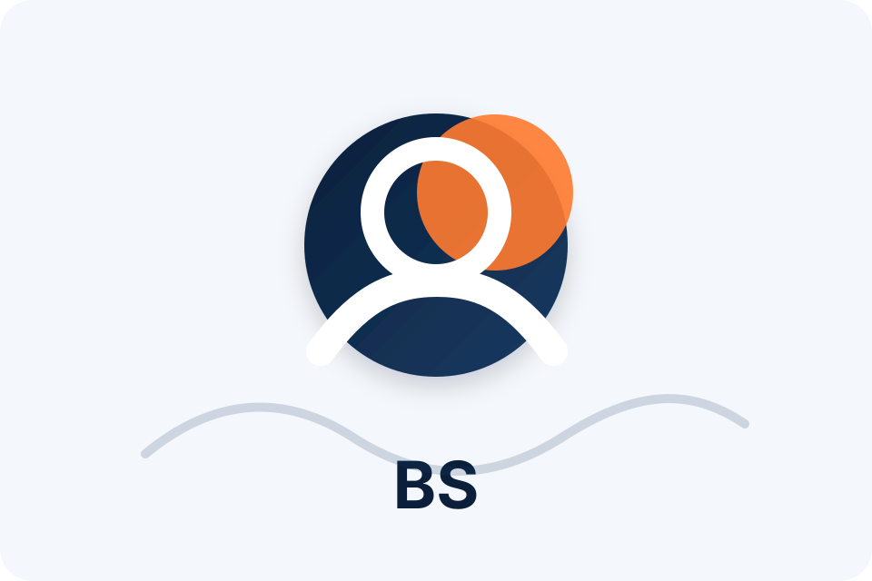

S
Strategic
I try to choose the path that makes the work clearer, not just the path that sounds most impressive.
I am a fourth-year Computer Science student at UVA who likes building practical software and understanding the systems underneath it. The work I am most proud of usually starts with curiosity, then gets better through patience and revision.

I used to think a portfolio was mostly a place to show finished things. I still think evidence matters, but building this eP changed how I understand the evidence. A project is more persuasive when the reader can see the problem, the decisions, the limits, and the reflection around it.
That is why this site is organized around plain project names and short case studies instead of a transcript-style list of classes. The course context is still there, but the first question is simpler: what did I make, analyze, organize, or learn?
Start with a real use case, even if the first version is small.
Look at the database, network, security assumptions, and hidden dependencies.
Make the work understandable to a reader who did not take the class.
Use feedback to make the path clearer instead of just adding more information.
I try to choose the path that makes the work clearer, not just the path that sounds most impressive.
Systems work rewards slowing down, especially when a design choice seems easy at first.
I like building on an idea in my own way, even when the starting point is familiar.